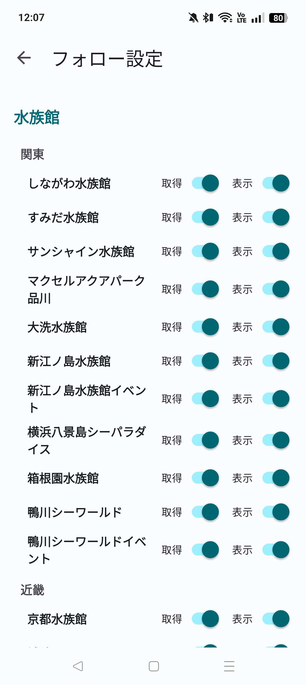
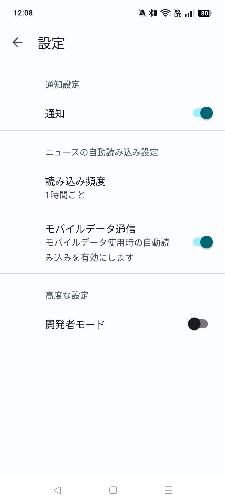

投稿者: 坂東入香
いつも坂東入香アプリをご利用いただき、ありがとうございます。
この度，新規機能の実装と改善を進め，新たなバージョンをリリースしました。
以下のリンクからアプリをダウンロードいただけます。インストール方法はインストールマニュアルをご覧ください。
フォロー機能，モバイルデータ通信時の読み込みの制御機能，開発者モードを実装しました。
ニュースを読み込み・表示する園館を，ユーザー側で制御できます。
フォローの設定は右上のオーバーフローメニューの「フォロー設定」から行えます。
フォロー設定画面では、園館ごとにニュースの読み込み・表示のオン/オフを切り替えることができます。

設定画面で，オン/オフを切り替えることができます。

モバイルデータ通信時の読み込みをオフにすると，モバイルデータ通信時のニュースの自動読み込みを停止します。モバイルデータの通信量を削減できます。
開発者モードをオンにすると，無効化されている機能を一時的に有効化できます。 基本的に，開発者の指示がない限りはオンにしないでください。
今後も皆さまのご意見を取り入れながら，アプリを改善していきたいと考えています。
「この園館もスクレイピングしてほしい」「こんな機能が欲しい」「ここを直してほしい」など，いつでもお気軽にお知らせください。
また，今回のアップデートでは，大幅に機能を追加したため，バグが多数存在する可能性があります。 もしバグを見つけた場合は，お知らせいただけると幸いです。